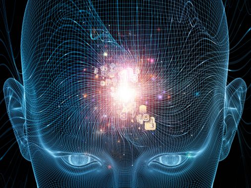

- Qu'es que l'intelligence artificielle?
- A quoi sert- elle?
Le terme « intelligence artificielle », est souvent abrégé par le sigle « IA » (ou « AI » en anglais, pour Artificial Intelligence). Voici le lien qui mène vers une video explicative de ce qu'est réellement une intelligence artificielle. "https://www.youtube.com/watch?v=Kazkft5_yek"
Il faut voir l’IA actuelle comme des appareils ayant appris d’eux-mêmes par le biais du machine learning. Grâce à un réseau neuronal et une grande quantité de données, l'intelligence artificielle est capable de reconnaître certains éléments en discernant les différences entre deux réponses test et finalement à s’améliorer d’elle-même.
C’est ensuite à son programmeur d’affiner l’ensemble pour que les réponses correspondent à celles souhaitées. Par exemple, il est possible d’apprendre à une IA que tout ce qui est petit, a des poils et une queue est un chat, mais elle risque de se tromper si on lui montre un chien. Il faudra donc peaufiner l’ensemble pour ajouter le paramètre « miaule ».

https://www.qwant.com/?q=intteligence%20artificielle&t=images&client=brz-moz
https://www.qwant.com/?q=intteligence%20artificielle&t=images&client=brz-moz